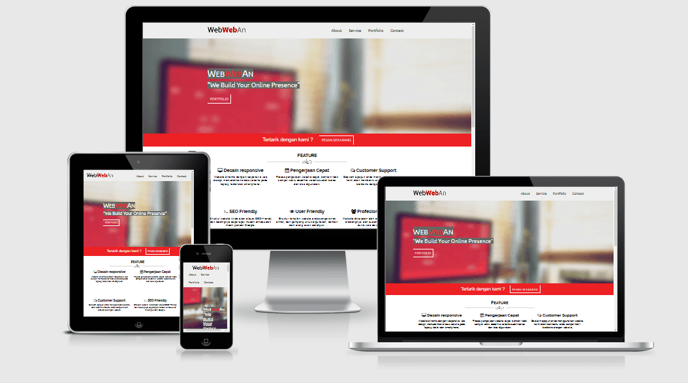

Diposting oleh M. Irsyad Fauzan pada 17 Januari 2016 18:05
 Bagi para web development dan orang-orang yang bergelut dengan internet sedikit tidaknya pasti sudah mengetahui tentang pengertian web responsive. Dijaman modern ini dengan perkembangan gadget yang pesat, banyak orang lebih suka browsing di internet menggunakan smartphone mereka. Maka dari itu situs web saat ini dituntut untuk mendukung berbagai jenis tampilan, mulai dari komputer, tablet, dan smart phone agar situs web tersebut dapat dilihat dengan indah di berbagai jenis device Sekarang ini terdapat teknik responsive, teknik responsive adalah teknik yang digunakan untuk membuat layout menyesuaikan diri dengan tampilan device pengunjung, baik dari resolusi dan orientasinya. Jadi tampilan pada desktop komputer dengan pada smartphone akan berbeda. Dengan teknik responsive ini maka tidak perlu sebuah web development membuat banyak tampilan untuk satu situs.
Kelebihan dari web responsive adalah penghematan penggunaan sub domain, yang tadinya kalau mengakses harus menggunakan kata “mobile” atau “m” didepan domainnya, sekarang cukup dengan mengetik nama domainnya saja dan tampilan akan menyesuaikan dengan device yang digunakan. Keuntungan yang paling utama tentu saja dapat mengurangi jumlah development menjadi satu saja untuk dipakai semua devices. Sedangkan kekurangannya adalah jika digunakan pada website yang bertujuan untuk menampilkan gambar saja, seperti website fotografi misalnya. Resource gambar yang diload oleh device kita akan sama dengan yang diload dikomputer kita.
Dengan adanya teknik responsive ini dapat mempermudah kerja programmer dan juga dapat menghemat penggunaan subdomain. Namun penggunaanya perlu di sesuaikan, misalnya untuk website yang akan menampilkan gambar saja maka lebih baik tidak menggunakan teknik responsive karena akan sangat berat dalam loading gambarnya.